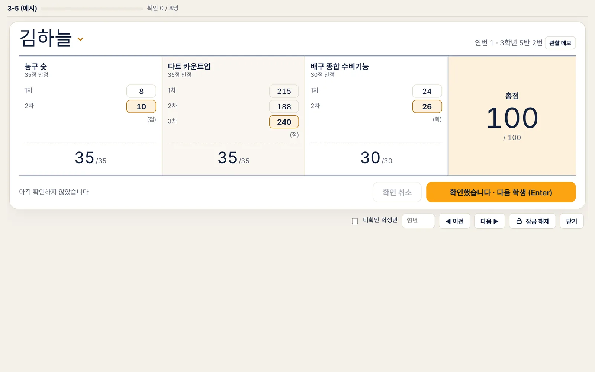
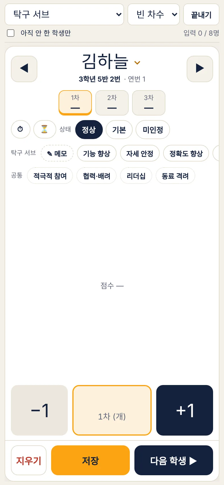
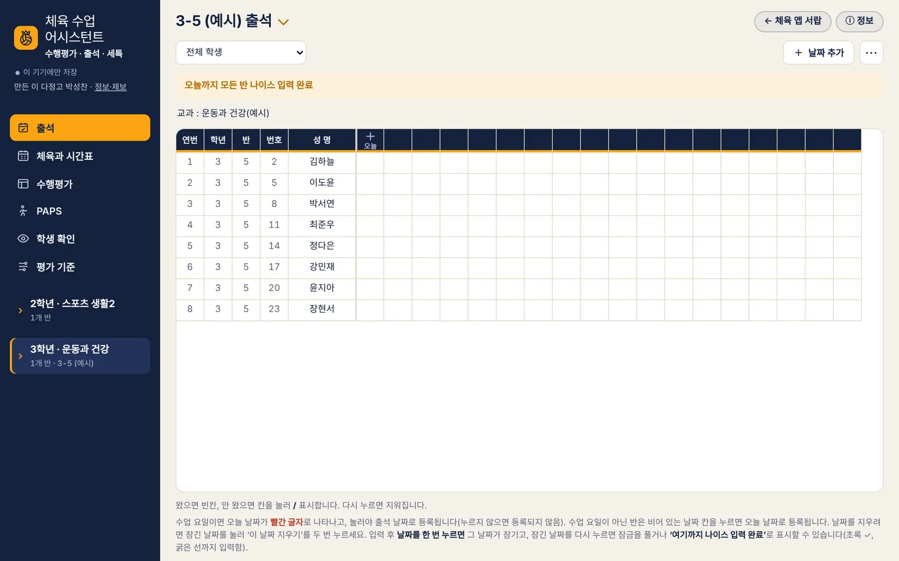
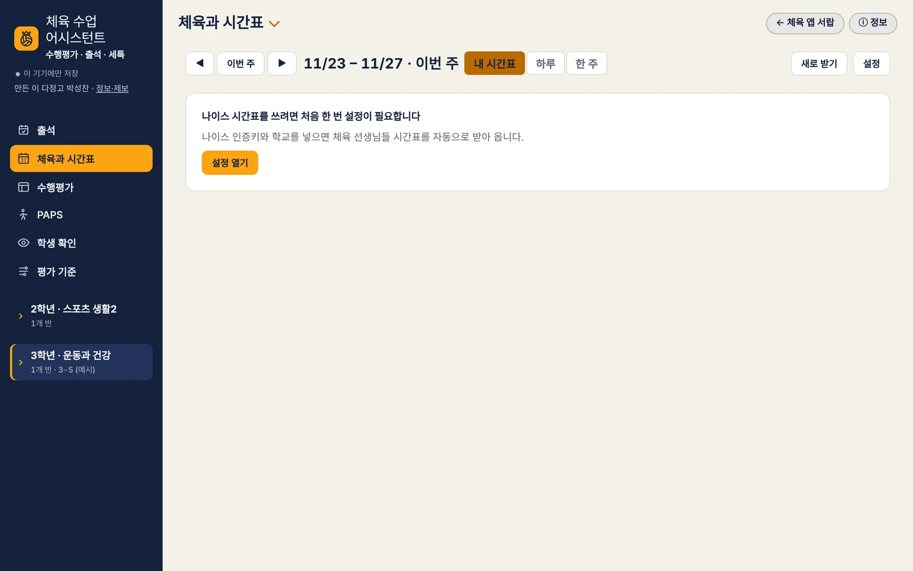

체육 수업 어시스턴트 사용법
출석부 파일로 반을 만들고 수행평가 기록·점수 환산, 출석, 학생 점수 확인, 관찰 메모·세특 초안, 나이스 업로드 파일까지 한 곳에서 처리해요.
01처음이라면
- 처음 열면 ‘시작 · 설정’ 화면기록이 하나도 없는 빈 상태로 시작해요. ① 출석부 넣기 ② 학년 명렬표 넣기 ③ 평가 기준 만들기 순서 카드가 보여요.
- 먼저 구경하려면 ‘예시로 둘러보기’예시로 둘러보기를 누르면 예시 반 2개와 예시 평가 기준이 열려요. 다 봤으면 노란 띠나 설정 화면의 예시 지우기로 언제든 빈 상태로 돌아가요. 예시를 보다가 실제 출석부를 넣으면 예시는 자동으로 지워져요.
02수행평가 세팅하기
출석부로 반을 만들고, 명렬표로 성별을 채우고, 평가계획으로 기준을 만들면 바로 기록할 수 있어요. 처음 한 번만 하면 학기 내내 그대로 써요.
- 시작 · 설정 화면에서 순서대로
왼쪽 메뉴 맨 위 시작 · 설정에 세 단계 카드가 있어요. 카드에 ✓ 표시가 생기면 그 단계가 끝난 거예요. 수업 중에 출석부를 더 넣거나 기준을 고칠 때도 이 화면으로 오면 돼요.
- 출석부 넣기
나이스에서 내려받은 수업반별 출석부(.xlsx)를 ① 칸에 끌어다 놓아요(누르면 파일 고르기). 반이 만들어지고 소속반·번호·이름이 들어가요. 여러 반 파일을 한 번에 넣어도 되고, 나중에 수행평가 탭의 명단 넣기로 넣어도 같아요.
- 같은 수업반 출석부를 다시 넣으면 입력한 기록은 그대로 남아요.
- 학년 명렬표 넣기
학년 전체 명렬표(학년·반·번호·성명·성별)를 ② 칸에 넣으면 반·번호·이름이 맞는 학생의 성별이 한 번에 채워져요. 남녀 구간표가 다른 영역이 있을 때 필요해요. 먼저 넣어 두면 나중에 넣는 출석부에도 성별이 자동으로 들어가요.
- 명렬표가 없으면 수행평가 탭의 성별 칸에서 직접 고를 수도 있어요.
- 평가 기준을 만들 학년 고르기
③ 카드에서 학년을 누르면 그 학년의 평가 기준 화면이 열려요. 학년마다 기준이 따로 있고, 한 학년의 기준은 그 학년 모든 반 수행평가에 함께 쓰여요. 처음에는 비어 있으니 아래처럼 평가계획에서 가져오면 가장 빨라요.
- 평가계획에서 가져오기 — AI에게 맡기기
평가계획에서 가져오기 → AI 요청문 복사를 누르고, 학교 평가계획(PDF·사진·한글 파일)과 복사한 요청문을 Claude 같은 AI 채팅에 함께 보내요. AI가 돌려준 답을 통째로 복사해 2번 칸에 붙여 넣고 미리보기를 눌러요.
- AI에는 평가계획만 올리세요. 학생 명단이나 점수 파일은 올리지 않아요.
- AI 답에 설명 글이나 ```json 표시가 섞여 있어도 그대로 붙여 넣으면 돼요.
- 미리보기로 평가계획과 맞춰 보기
영역마다 구간표와 기본점수가 정리돼 보여요. 평가계획 표와 나란히 놓고 아래를 확인하세요.
- 맨 위 합계가 100점인지 (아니면 주황 글씨로 알려 줘요)
- 영역별 배점과 구간표 맨 위 점수
- 맨 끝 그 아래 점수 — ‘1개 이하’, ‘0개’ 같은 최저 구간
- 남녀 기준이 다르면 남·여 줄이 따로 있는지
- 기본점수(미제출·질병)와 미인정 결시 점수
- 노란 확인해 주세요 상자가 있으면 그 내용
- 적용하기
이 학년 기준을 이것으로 바꾸기를 고르고 적용. 이름이 같은 영역의 학생 기록은 그대로 남아요. 기존 영역에 하나만 더할 때는 지금 기준 뒤에 영역으로 더하기를 골라요.
- 학생 기록이 있는 영역이 새 기준에서 빠지면 적용 전에 한 번 더 물어봐요.
- 기록이 있는 영역은 평가 횟수가 바뀌지 않게 지켜요.
- 평가 기준 화면에서 다듬기
가져온 기준은 칸을 눌러 바로 고칠 수 있어요. AI 없이 처음부터 만들 때는 + 기록 환산 영역 / + 등급 선택 영역으로 추가해요.
평가 방식 이럴 때 정하는 것 기록 환산 성공 개수·횟수·점수·거리처럼 기록 구간으로 점수를 줄 때 최소 기록 → 점수 구간표, ‘그 아래’ 점수, 평가 횟수(최고 기록 반영), 기록 단위 등급 선택 채점 항목마다 기준을 골라 점수를 더할 때 (글쓰기·발표 등) 항목과 기준별 점수 점수 직접 입력 위 둘로 나타내기 어려울 때 만점, 입력 가능한 최저 점수 - 평가 횟수: 여러 번 측정해 가장 높은 기록을 반영해요.
- 한 차수 나눠 재기: ‘포핸드, 백핸드’처럼 적으면 한 번 측정할 때 두 칸에 나눠 넣고 합계로 점수를 내요.
- 남녀 구간표를 따로 씀: 남학생·여학생 구간표가 따로 생겨요.
- 기록하고 나이스로 내보내기
표의 1차·2차 칸에 기록을 넣으면 점수가 바로 환산돼요. 체육관에서는 측정 모드로 휴대폰에서 한 명씩 넘기며 넣어요. 평가가 끝나면 나이스 파일 내려받기에서 영역이 ‘맞음’인지 확인하고 .xlsx로 받아 나이스에 올려요.
- 상태: 정상(기록으로 환산) · 기본(참여했으나 미제출·장기 질병 결시 → 기본점수) · 미인정(장기 미인정 결시 → 기본점수−1)
- 엑셀 한 열을 복사해 칸에 붙여 넣으면 아래로 한 번에 채워져요.
03수업 중에 쓰기
세팅이 끝나면 수업 시간에는 이렇게 써요.




04알아 두면 좋은 기능
- 기준 복사 — 지금 평가 기준을 글로 복사해 동료 선생님께 보내면, 그대로 ‘평가계획에서 가져오기’에 붙여 넣어 쓸 수 있어요.
- ··· 메뉴 — 세특 초안 모아 보기, 관찰 메모·세특 초안 엑셀 받기, 점수 변경 이력, 백업 파일 내려받기·불러오기, 반 추가·이름 변경.
- PAPS 탭 — 같은 기기의 PAPS 기록부와 연결해 수업 중에도 PAPS 기록을 넣고 확인해요.
- 처음 상태로 되돌리기 — 시작 · 설정 맨 아래의 모두 지우고 처음 상태로. 반·명단·기록·출석·관찰 메모·평가 기준을 모두 지우고 처음 연 상태로 돌아가요. 시연·연습을 마친 뒤 쓰고, 잘못 누르지 않게 ‘초기화’라고 써야 지워져요.
05꼭 지켜 주세요
- 기록은 입력한 기기의 브라우저에만 저장돼요. 수업이 끝나면 ··· 메뉴에서 백업 파일을 받아 두세요.
- 같은 수업반 출석부를 다시 넣어도 이미 입력한 기록은 그대로 남아요. 명단이 바뀌었을 때 안심하고 다시 넣으세요.
- 학생 확인 화면을 TV에 띄울 때는 다른 학생 점수가 보이지 않는지 한 번 확인하세요.
06내 수업에 맞게 고쳐 쓰기
HTML 받기로 파일을 받아 Claude 같은 AI에게 첨부하고, 바꾸고 싶은 점을 한 가지씩 말해 보세요. 고친 파일은 더블클릭으로 바로 써요.
원본 파일은 따로 보관하고, 학생 이름이 담긴 백업 파일은 AI에 올리지 마세요.